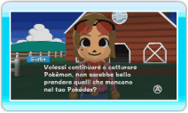
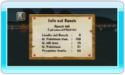

16 |
Usa la bacheca |
 |

● Pokémon desiderati La sezione POKéMON DESIDERATI mostra i Pokémon che Giulia vorrebbe che portassi al Ranch. Questa funzione si attiva solo se depositi Pokémon al Ranch da Pokémon Diamante o Pokémon Perla. Un Pokémon desiderato dev’essere trovato entro un certo limite di tempo, altrimenti la richiesta verrà annullata.
I Pokémon che compaiono tra quelli desiderati sono soprattutto Pokémon che non hai catturato in Pokémon Diamante o Pokémon Perla (basandosi sulle informazioni del Pokédex). Quando trovi un Pokémon desiderato e lo porti al Ranch, ricevi una nuova richiesta. Trovando i Pokémon desiderati, puoi completare più velocemente il tuo Pokédex. Usa questa funzione per completare il Pokédex Nazionale!
Sullo schermo Pokémon desiderati, quando punti verso un Pokémon e premi Nota: dopo aver portato il tuo secondo Pokémon al Ranch, potrai consultare l’elenco dei Pokémon ottenuti in precedenza.
Una volta ottenuto un Pokémon desiderato, punta verso la freccia in basso e premi
Quando depositi un Pokémon desiderato al Ranch, Giulia potrebbe chiederti di scambiare un Pokémon con lei. I Pokémon che scambi con Giulia diventeranno di sua proprietà. I Pokémon che ricevi da Giulia possono essere ritirati, ma quelli che tu hai dato a lei non potranno più essere trasferiti sulla scheda di gioco di Pokémon Diamante o Pokémon Perla. 
● Info sul Ranch Qui puoi controllare il livello del Ranch, il numero di Pokémon che hai o il numero massimo di Mii che puoi portare al Ranch. |
 , puoi controllare come catturare il Pokémon desiderato o quali sono le condizioni necessarie per ottenerlo. Se Giulia ti chiede più di un Pokémon per volta, punta verso la freccia verde e premi
, puoi controllare come catturare il Pokémon desiderato o quali sono le condizioni necessarie per ottenerlo. Se Giulia ti chiede più di un Pokémon per volta, punta verso la freccia verde e premi  |
 |
 |